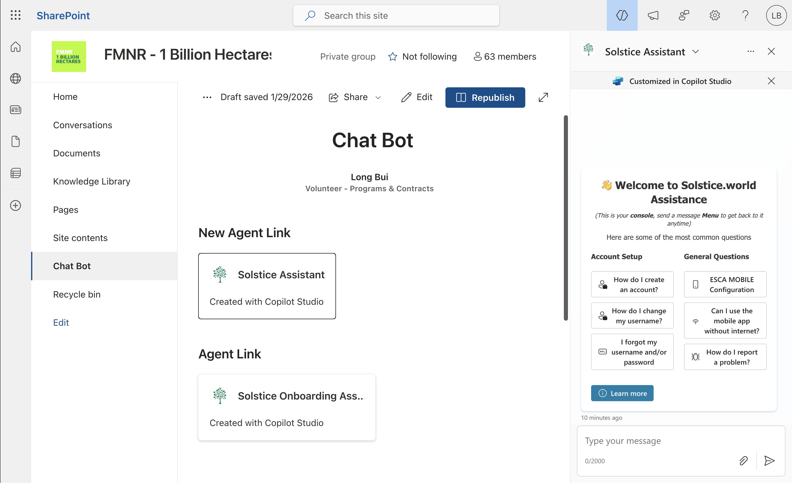
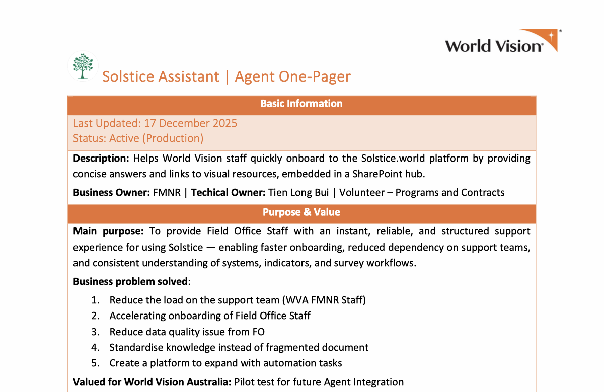
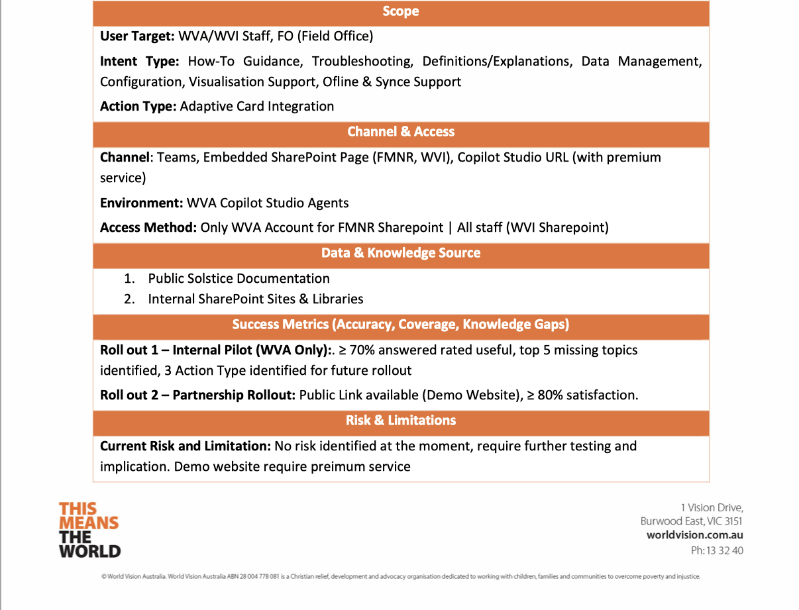
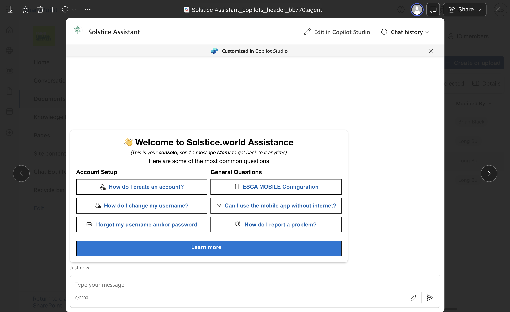
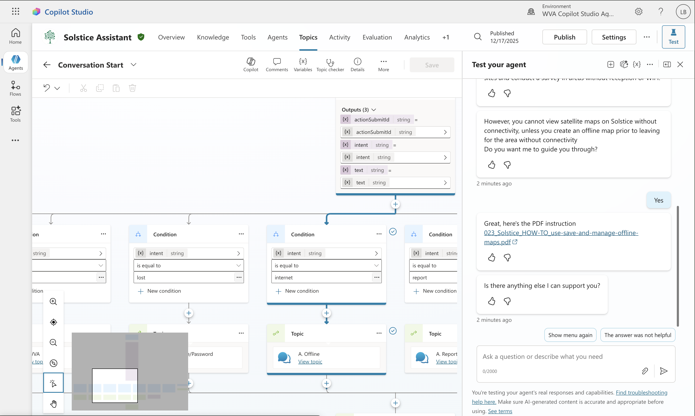

Solstice Assistant – AI Copilot for World Vision
Data & Operations Analyst Intern · World Vision Australia (FMNR Team) | 2025

Overview
The Solstice Assistant is a production-ready Microsoft Copilot Studio agent I designed and deployed for World Vision Australia's FMNR (Farmer-Managed Natural Regeneration) team. It helps Field Office staff across WVA and WVI onboard to the Solstice.world data-management platform through a conversational self-service console embedded directly inside SharePoint and Microsoft Teams.


What was the challenge?
Field Office staff – often with limited time, non-technical backgrounds, and English as a second language – were relying on ad-hoc support from the WVA FMNR team every time they hit an issue with Solstice: creating accounts, configuring sites, running surveys, syncing offline data, or building visualisations. Knowledge was fragmented across SharePoint folders, user guides, and tribal knowledge, which slowed onboarding and created recurring data-quality issues from the field.
What I did
- Designed the end-to-end agent architecture in Microsoft Copilot Studio, covering 15+ conversation topics spanning account setup, troubleshooting, sites, indicators, surveys, mobile app, offline & sync, and visualisations.
- Authored a grounded system prompt defining mission, scope, answer construction rules, fallback behaviour, and a semantic-search strategy over verified SharePoint and Solstice Help Center sources only — preventing hallucinations.
- Built rich Adaptive Cards (JSON) for interactive responses — embedding resource links, app-store download buttons, conditional follow-up questions, and email-escalation flows via Power Automate.
- Structured an FAQ knowledge base (FMNR_FAQs.xlsx) with question / short-answer / source-link columns, integrated as the primary retrieval layer before fallback web search.
- Wrote a complete Knowledge Transfer Handbook so the FMNR team can replicate, maintain, and extend the agent in ~90 minutes without my involvement.
- Defined success metrics for a two-phase rollout: internal WVA pilot (≥70% answer usefulness) followed by a partnership rollout to WVI (≥80% satisfaction).


Tools & skills
Microsoft Copilot Studio · Adaptive Cards (JSON) · Power Automate · SharePoint · Microsoft Teams · Prompt Engineering · Conversational AI Design · Knowledge Base Structuring · Technical Documentation
Outcome
The Solstice Assistant went live in production as WVA's pilot test for future agent integration, giving field staff instant, consistent guidance without depending on the support team. Beyond the tool itself, the project established a reusable template — documentation, configuration handbook, and governance pattern — that WVA can apply to automate other internal knowledge workflows.
← Back to Projects